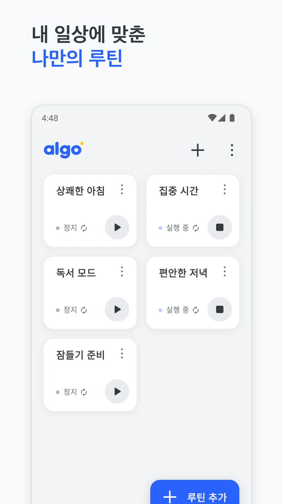
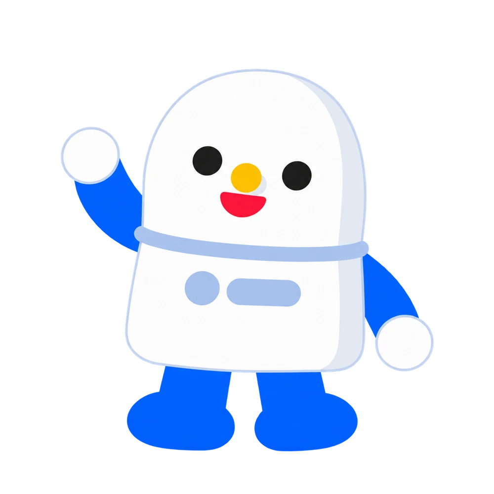
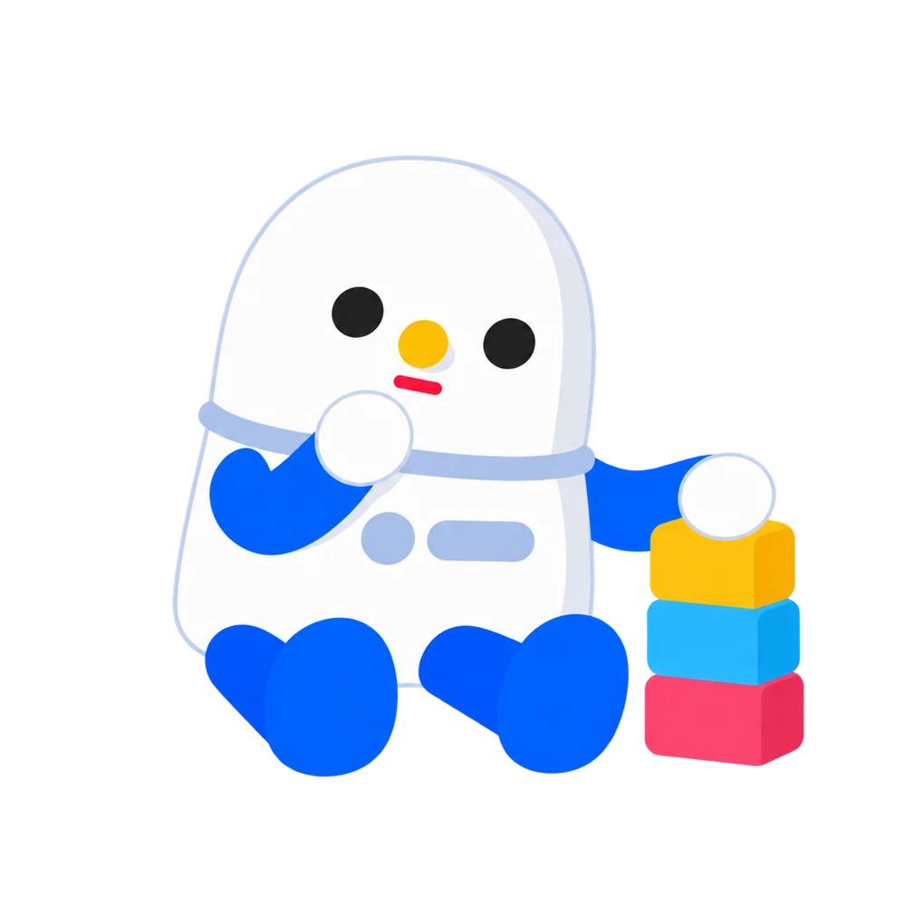
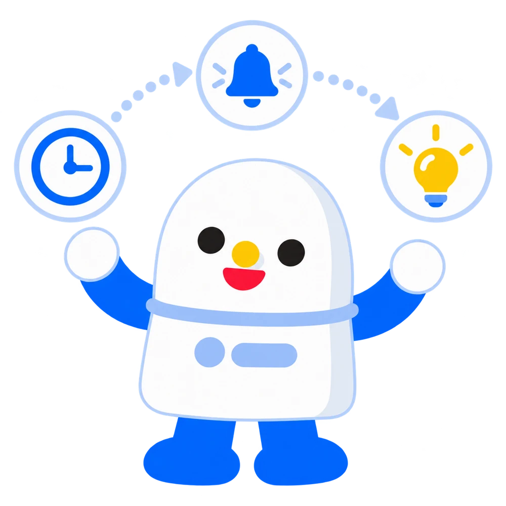
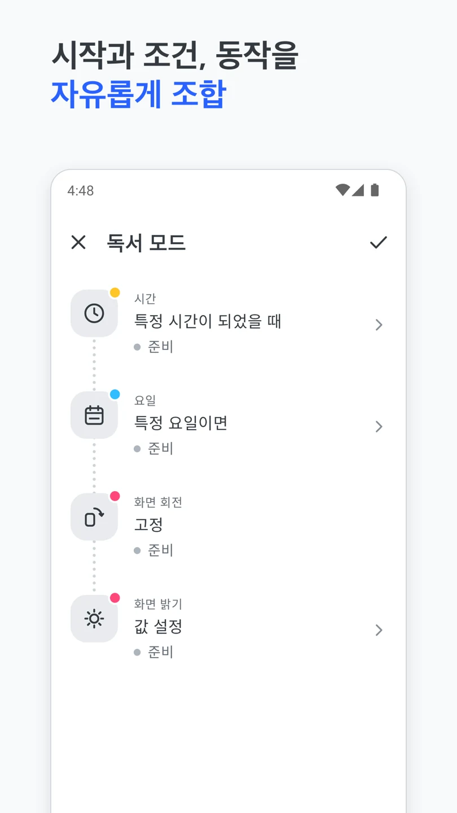
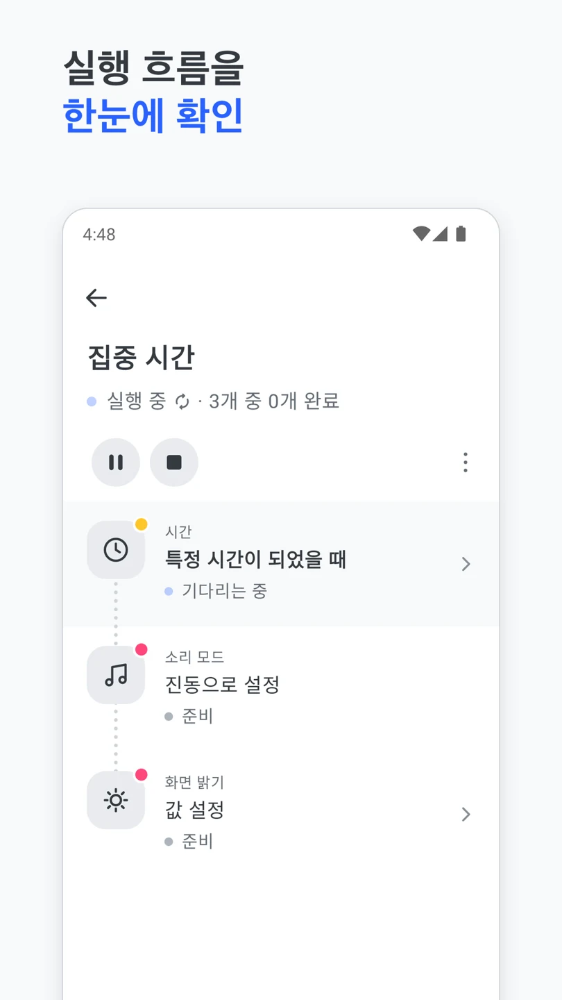

나만의 루틴,
알아서 착착.


이런 순간,
알고에게.
작은 터치 하나가 여러 작업의 시작이 되도록.
익숙한 순간을 골라 자동화할 일을 살펴보세요.
출발 준비, 한 번에.
NFC 태그를 인식하면
- 미디어 음량 설정
- 화면 밝기 조절
- 내비게이션 앱 실행
NFC를 지원하는 기기와 NFC 태그가 필요해요.
자동화 구성을 보여주는 예시예요. 기기, 안드로이드 버전과 허용한 권한에 따라 사용할 수 있는 동작이 달라져요.
시작부터
동작까지.
언제 시작할지 정하고, 필요한 조건을 확인하고,
할 일을 순서대로 쌓으면 나만의 루틴이 돼요.
시작
언제 시작할까요? NFC 태그, 블루투스 연결, 위치 등을 시작점으로 정해요.
조건
필요할 때만 실행되도록. 기기 상태 등 확인할 조건을 더해요.

동작
음량을 바꾸고, 앱을 열고, 조명을 켜고. 원하는 동작을 순서대로 연결해요.

내 일상에
맞춘 루틴.
상쾌한 아침부터 잠들기 준비까지.
매일 하는 일에 내 이름표를 붙여보세요.
루틴을
한눈에.
내가 만든 루틴을 모아두고, 목록에서 바로 시작하거나 멈춰요. 어떤 루틴이 실행 중인지도 확인할 수 있어요.
할 일을
차곡차곡.
시작, 조건, 동작을 조합해 순서를 만들어요. 익숙한 루틴에 새로운 할 일을 더할 수도 있어요.

실행 과정도
꼼꼼하게.
루틴을 열어 각 작업의 진행 상태를 살펴보세요. 알고가 어떤 순서로 일을 하고 있는지 확인할 수 있어요.

궁금한 점.

무료로 사용할 수 있나요?
네. 알고는 광고가 포함된 무료 앱이에요. 무료 버전에서 나만의 루틴을 만들어 시작할 수 있어요.
프리미엄은 무엇이 다른가요?
한 번 구매하면 광고가 제거되고 더 다양한 기능을 사용할 수 있어요. 현재 가격과 제공 기능은 앱 안에서 확인해주세요.
어떤 기기에서 쓸 수 있나요?
알고는 안드로이드 앱이에요. 설치 가능 여부는 Google Play에서 확인해주세요. 기기와 안드로이드 버전에 따라 사용할 수 있는 동작이 달라요.
NFC 태그가 꼭 필요한가요?
NFC를 시작으로 쓰는 루틴에만 필요해요. 이때는 NFC 태그와 NFC를 지원하는 기기가 모두 필요해요. 다른 시작 항목으로 루틴을 실행할 수도 있어요.
작업에 권한이 필요한 이유는요?
위치나 기기 제어 등 일부 작업에는 안드로이드 권한이 필요해요. 사용할 작업에 맞춰 앱 안의 안내를 확인해주세요.
문의는 어디로 하면 되나요?
궁금한 점은 ogoons@hanmail.net으로 보내주세요. 사용 중인 기기와 안드로이드 버전을 함께 알려주시면 도움이 돼요.
반복은 알고에게.
시간은 나에게.
매일 반복하던 작은 일 하나부터.
이제 첫 루틴을 만들어봐요.
Android 전용 · 광고 포함 · 선택적 프리미엄 구매